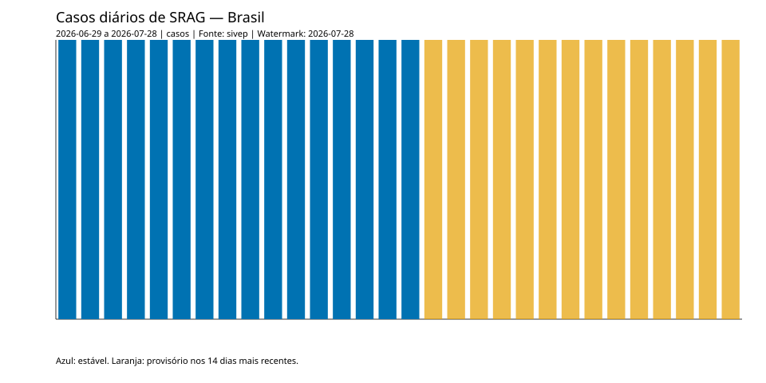
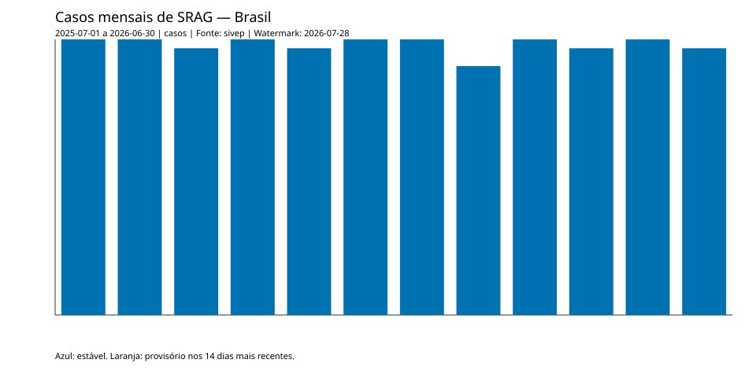

Taxa de aumento de casos
0 %
Período: 2026-07-05 a 2026-07-11
Estado: available | Qualidade: available
- Casos na semana de referência: 7; semana anterior: 7.
Modo: deterministic (demonstração não-live).
generated_at: 2026-07-28T12:00:00+00:00 | as_of: 2026-07-28 | run_id: deterministic-run
0 %
Período: 2026-07-05 a 2026-07-11
Estado: available | Qualidade: available
0 óbitos por 100 mil habitantes
Período: 2026-06-14 a 2026-07-11
Estado: available | Qualidade: available
7.14 %
Período: 2026-05-31 a 2026-06-27
Estado: available | Qualidade: available
1 %
Período: 2026-06-01 a 2026-06-30
Estado: available | Qualidade: available
32.14 %
Período: 2026-06-14 a 2026-07-11
Estado: available | Qualidade: available
61.7 %
Período: 2026-03-01 a 2026-05-31
Estado: available | Qualidade: available
Escopo limitado: CO, NE, S, SE. Não representa Brasil inteiro.


Comentário factual determinístico usado após falha/rejeição da OpenAI.
Modelo solicitado: fake-requested; servido: fallback.
Fontes: CNES, IBGE, PNI, SIVEP-Gripe.
Este relatório demonstra uma PoC de dados públicos. Não oferece diagnóstico, previsão ou recomendação clínica.